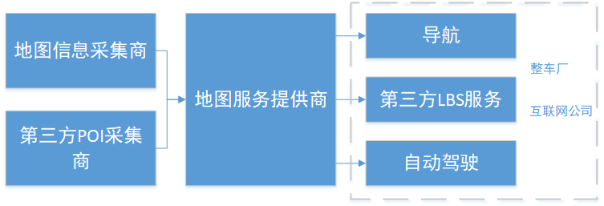

概述
高精度数字地图
具备亚米级精度，能够提供道路、车道、交通标识、路面状况、高度等信息的高精度、高准确性地图数据集。
高精度驾驶环境数据是自动驾驶和无人驾驶的基础数据之一。高精度数字地图是为自动驾驶和无人驾驶服务的数据集，其高精度信息聚焦在交通道路层面，为形式车辆提供高精度的道路车道和功能局域（公交专用道、辅道、应急车道）等划分，道路指示信息（指示牌、车道选择、交通信号灯）、道路周边环境（道路情况、施工情况、非机动车道情况）等信息。
它和普通的数字地图有什么区别
| 普通数字地图 | 高精度数字地图 | |
|---|---|---|
| 应用场景 | 驾驶导航 定位服务 O2O服务支持 | 智能导航 自动驾驶 无人驾驶 |
| 数据范围 | 涵盖道路、建筑、商户等个方面数据 | 聚焦在交通道路 |
| 精度要求 | 10米级 | 亚米级 |
| 定位要求 | GPS | GPS、5G基站、车辆相对定位 |
| 测绘技术 | 官方测绘数据、遥感航拍、POI数据商、实地测绘、众包 | 高精度测绘车实地测绘；众包 |
它和ADAS系统的关系
ADAS是辅助驾驶系统，旨在为人工驾驶服务，可以认为是自动驾驶和无人驾驶系统中的一部分功能模块。同时ADAS系统以主动感知为主，基于车载的传感器感知汽车周围信息并给出反馈和控制信号。从这个层面上说，高精度数字地图和ADAS是互补的，地图信息和ADAS传感信息互补并互相验证，共同支持高端的驾驶功能。
构建高精度数字地图的难点在哪里
- 高精度：亚米级精度需求，需要视觉识别、毫米波雷达等高精度设备进行测绘。
- 高准确性：对地图数据的准确性和真实性要求很高，同一路段的测绘需要进行重复验证或多元数据交叉验证，进一步垫高成本
- 高效率：道路信息和周边信息等中微型变化较快，高精度地图数据需要快速迭代和更新
当前的技术水平能够完成高精度数字地图的采集和构建吗
目前高精度测绘车主要依靠摄像头、毫米波雷达、红外等传感设备进行实际路测获得高精度地图信息，从技术层面上而言目前基本达到了高精度数字的图的采集要求。
最大的问题在于采集效率和成本。高德和百度的高精度地图测绘车基本装备和实验用无人车设备类似，基本造价在600-800万/台，同时每台车每日的工作里程有上限，从成本上和效率上无法兼顾。
市场
市场规模
高精度数字地图市场高度依赖于自动驾驶和无人驾驶技术的渗透率，并作为后者实现的必要前提。
目前中国汽车保有量2亿量，若按1元/车/天的服务费粗略估计，整个市场天花板在800亿左右。
发展趋势
高精度数字地图的市场还没有被发掘，其发展主要受制于几个因素：汽车传感器和联网技术的发展、无人驾驶技术的发展，因此就目前而言属于长线研发行业。
从高精度地图的商业变现来说，可以分为几个阶段：
数据采集和出售（1-3年）
ADAS系统辅助支持（1-5年）
完整高精度地图数据服务和无人驾驶支持（3年以后）
市场格局
鉴于无人驾驶对数据准确和可靠性的高要求，市场将呈现寡头垄断格局，作为一线的无人驾驶技术提供方，基本会选择采用行业第一和第二的地图数据（互相冗余），因此将呈现头部厂商市占率不断上升的马太效应。
产业链

整个数字地图产业链上游为数据采集和标准化为主的地图信息采集商和第三方POI采集商，主要商业模式为售卖数据，一般大型的地图信息采集商同时会采购第三放POI数据，并通过自建地图服务的形式切入下游需求市场（如四维图新、高德等）
中游为地图服务提供商，主要针对下游不同需求，向上游采购数据集，定制地图和所需POI数据，形成服务，商业模式为增值服务软件收费、POI广告收费等，典型的公司有百度地图、苹果地图、Waze等
下游为地图服务需求端，一般主要需求为导航、LBS服务，未来较大的一块需求增长点为自动驾驶
有意涉及高精度数字的厂商基本有几种类型：地图信息采集商(图商)、互联网企业、车企这三类。
主要厂商
| 公司 | 成立时间 | 阶段 | 创始团队背景 | 类型 | 业务情况 | 采集方式（高精度部分） |
|---|---|---|---|---|---|---|
| 四维图新 | 2002 | A股上市，市值300亿 腾讯，战投10% | 创始人吴劲风，中国卫星集团总经理，政府资源背景浓厚 | 图商 具备测绘资质 位置数据服务提供商 | 2016年完成ADAS辅助级别高速公路地图覆盖 2017年实现20个城市的同级别地图覆盖 2019年正式制作满足自动驾驶需求的高精度地图 | 专用车采集 |
| 高德 | 2001 | 收购，2014年阿里10.45亿全资收购 | 创始人成从武，中科院经济硕士，早年从事金融信托行业工作97年开始接触GPS应用 | 图商 具备测绘资质 位置数据服务提供商 | 2016年底完成高速、省道、国道的ADAS辅助级地图覆盖，2017年底扩展到30个城市主干路；2018年自动驾驶级别地图数据从高速向省道和主要城市扩展 | 专用车采集 |
| 易图通 | 2004 | 收购，2010年阿里3500万美元收购 | / | 图商 具备测绘资质 位置数据服务提供商 | 主要聚焦于合资车厂地图导航准前装领域，国内车厂地图导航前装领域 阿里收购以测绘牌照为主 暂无高精度地图发展动向 | / |
| 凯立德 | 1997 | 新三板上市，当前市值3.5亿 2014年获得平安创投9450万融资 | 创始人张文星，武汉测绘科技大学任教 | 图商 具备测绘资质 位置数据服务提供商 | 目前正在进行一线城市的实验区域地图数据采集 | 专用车采集 |
| 图吧 | 2004 | 战略投资，2016年联发科投资1亿美元 | / | 线上地图应用 | 为四维图新旗下的线上地图供应商，定位和百度地图类似，但市占率较低，属于二线梯队，暂无高精度地图发展动向 | / |
| 道道通 | 2002 | 收购，2013年被百度收购 | / | 图商 | 侧重地图导航，属于二线梯队 | / |
| Here | 2007 | 收购，2017年获intel约4亿美元收购15%股权，2015年以25以欧元出售给奥迪、宝马、戴姆勒财团 | / | 图商 全球最大地图测绘公司，但无国内资质 | 覆盖200个国家，普通交通地图覆盖里程4600万公里，ADAS级别高精度地图里程120万公里 | 专用车采集 |
| TomTom | 1991 | / | / | 图商 德国最大的地图测绘厂商 | 覆盖德国高速公路的高精度地图，长2.4万公里 开始进行美国底特律和密歇根测试版高精度地图 | 专用车采集 |
| 1998 | 美股上市，2004年纳斯达克上市 | 创始人拉里佩奇密歇根理工学士、斯坦福计算机硕士 | 互联网 | 自建部分城市高精度地图，主要用于Google自家无人车实验使用 | 专用车采集（激光雷达） | |
| 百度 | 1998 | 美股上市，2005年在纳斯达克上市 | 创始人李彦宏，北京大学信息学士、布法罗纽约州立大学完成计算机科学硕士 | 互联网 | 自建部分城市高精度地图，主要用于百度自家无人车实验使用 | 专用车采集（激光雷达） |
| waze | 2008 | 收购，2013年Goolge以11.5亿美元收购 | 创始人诺姆·巴丁，希伯来大学经济政治科学学士 | 互联网地图应用 | 主要为基于地图的出行社交服务： 1. 众包地图信息和路况信息更新，用户便利性信息提供（加油站、ATM、商场、餐饮），智能规划路径 2. 社交功能，包含会见地点共享和智能导航、部分网约车业务等 | / |
| 特斯拉 | 2003 | 美股上市，2010纳斯达克上市 | 创始人埃隆马斯克，硅谷钢铁侠 | 互联网+汽车 | 全球4万名车主提供100万公里道路数据 | 众包（特斯拉车身自带mobileye摄像头采集数据） |
| 丰田 | 1933 | 美股上市，1999年在纽交所上市 | / | 汽车 | 目前以高速公路为重点自建高精度地图，进一步向所有公路拓展，2020年初步实现无人驾驶级地图辅助 | 专用车采集 使用车载深度摄像头获取数据 |
| DeepMap | 2016 | A轮，2017年获得Accel、A16Z和金沙江的2500万美元 | 创始人吴双为百度硅谷研究院高级研究员，高级构架师 | 创业公司 | 专注于为无人驾驶提供高精度地图、精确实时定位和云服务基础构架的圈套解决方案提供 | 专用车采集 |
#关键点
盈利手段和成本
对应于高精度数字地图的完备性和自动驾驶技术的完备性，根据其应用场景和盈利模式也会有所区别
| 阶段 | 盈利模式 | 时间节点 |
|---|---|---|
| 数据采集和出售 | 向下游图商出售数据或相应报表 | 未来1-3年 |
| ADAS系统辅助支持 | 和图商或整车厂合作，作为ADAS数据支持，收取分成 | 未来1-5年 |
| 完整的高精度数字地图服务和自动驾驶支持 | 和整车厂或互联网车企深度合作和捆绑（基本已被战略投资） | 未来3-5年 |
成本端主要是高精度地图的构建成本，第一阶段基于GPS和车身传感数据的采集成本较低，第二阶段基于车载摄像头的实时车景分析和视频回传成本较高，但总体就未来网络带宽和终端电子的发展而言，整体成本是趋于下降的。
退出途径
就图商的定位而言，大型的第三方图商基本都占据垄断地位，以售卖数据为主，而更多的创业型图商都会被大型的互联网公司或者汽车整车厂控股或者收购，以维持其在行业上的战略优势。因此在公司在后期有一定的数据和技术积累情况下，被收购是主要的退出途径。